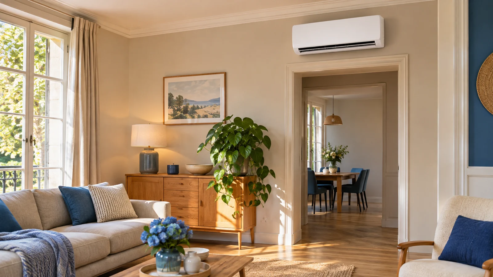
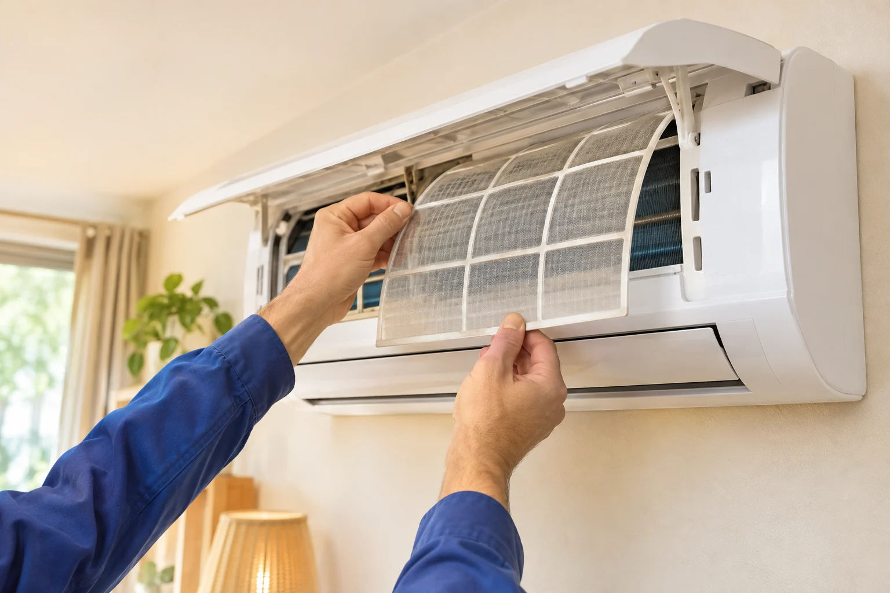

Préparer votre projet de climatisation
Nous réalisons l’installation de climatisation à Pineuilh. Nous échangeons sur les pièces concernées, leur usage et la configuration du bâtiment pour préparer votre projet.
Nous installons et entretenons vos équipements de climatisation, avec une attention portée à votre projet.


Nous réalisons l’installation de climatisation à Pineuilh. Nous échangeons sur les pièces concernées, leur usage et la configuration du bâtiment pour préparer votre projet.
L’emplacement des unités et les contraintes de votre intérieur font partie des points à examiner. Nous vous accompagnons pour intégrer les équipements à votre bâtiment.
Nous assurons également l’entretien de climatisation. Pour préparer votre demande, indiquez la marque, le modèle et la date du dernier entretien si vous les connaissez.
Contactez le bureau pour présenter votre besoin : installation ou entretien. Précisez votre commune et l’équipement concerné. Retrouvez nos coordonnées et les horaires du secrétariat sur la page Contact.